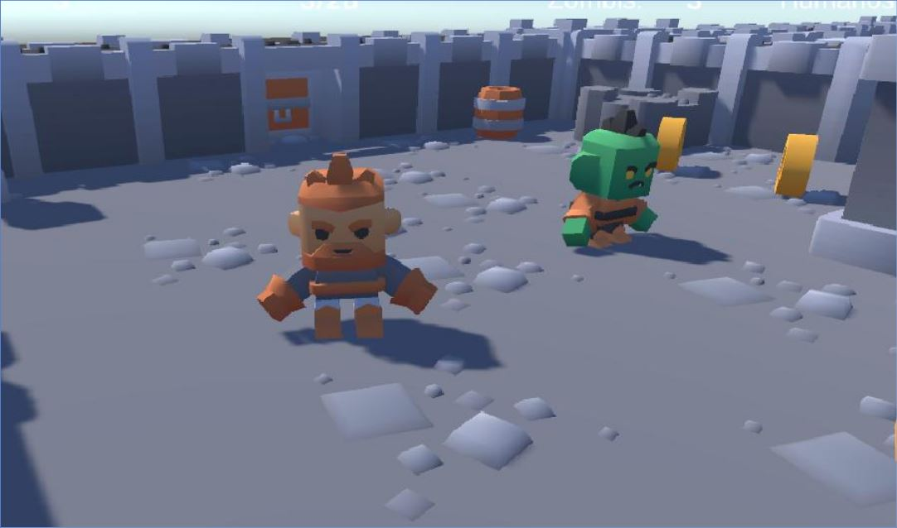
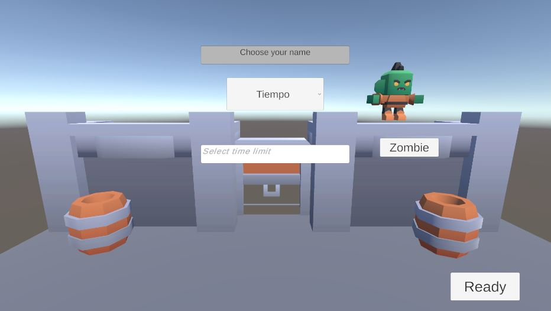
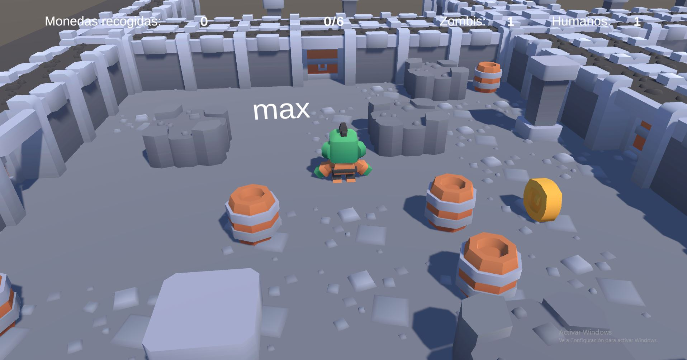
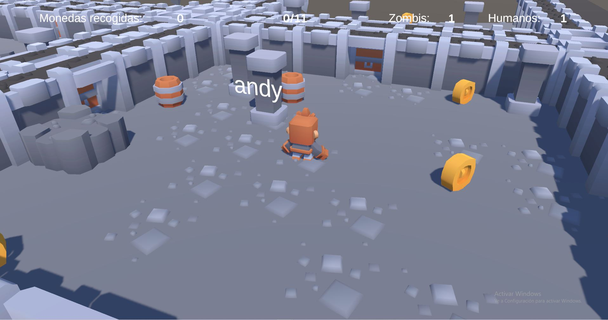

Implementación multijugador
a un juego existente mediante Netcode
INTRODUCCIÓN
Dado un proyecto de Unity casi funcional, se implementaron los cambios necesarios para conseguir un juego completo al que se pueden conectar varios jugadores. El juego base está inspirado en el mod de Half-Life/Source Engine, uno de los primeros en combinar supervivencia cooperativa asimétrica.
JUEGO BASE
El proyecto inicial presentaba una versión incompleta del juego “Zombfection”. La mecánica principal consiste en dividir a los jugadores en dos equipos (zombies y humanos). El objetivo de los zombies es tocar a los humanos para convertirlos en zombies. Los humanos tendrán que evitar a los zombies.
El juego cuenta con dos tipos de modo de juego:
- Modo monedas: los humanos tendrán que recolectar todas las monedas distribuidas por el escenario para conseguir la victoria.
- Modo tiempo: los humanos tendrán que sobrevivir el tiempo que dure la partida sin ser alcanzados.
Los jugadores comienzan en diferentes salas de un escenario generado procedimentalmente, de manera que solo aparece un personaje en cada sala.
El juego proporcionado contaba con las siguientes funcionalidades implementadas:
| Modos de juego | |
| Control del jugador |
|
| Interacción con el entorno |
|
| Cámara que sigue al jugador en tercera persona | |
| Interfaz de usuario |
|
OBJETIVOS
El objetivo principal del proyecto consistía en terminar de implementar los cambios necesarios para que el juego siguiera las normas anteriormente descritas y pudiera convertirse en multijugador.
Mediante la biblioteca Netcode for GameObjects (NGO), se debía gestionar la conexión de los jugadores, la asignación de equipos, la sincronización de los estados de juego y de sus eventos (recolección de monedas, conversión de humano a zombi y condiciones de fin de juego).
También, se debía asegurar que la cámara sigue al jugador correcto, y se debían actualizar las interfaces de usuario correctamente a todos los jugadores (tiempo restante, número de monedas recogidas, y número de humanos y zombies).
Otras limitaciones del juego incluían la falta de selección de nombre para identificarse ante los demás jugadores, la ausencia de sincronización del inicio de partida o la falta de información al terminar una partida (victoria, derrota o fin de partida por abandono).
IMPLEMENTACIONES OBLIGATORIAS
GESTIÓN DE LA CONEXIÓN Y DESCONEXIÓN DE LOS JUGADORES
Se creó un menú en el que es posible seleccionar crear una partida (Host) o unirse a una existente (Cliente). Después, se muestra otra escena en la que se puede cambiar el nombre del jugador y pulsar el botón para comenzar la partida. Solo el Host podrá seleccionar el tipo de partida y sus parámetros.

CONFIGURACIÓN DE PARTIDA
El Host selecciona el tipo de partida: modo monedas o modo tiempo. En el modo monedas es necesario introducir la densidad de monedas repartidas por el mapa, y en el modo tiempo es obligatorio establecer el número de segundos que esta durará.
INICIO DE PARTIDA SINCRONIZADO
La partida solo comienza cuando todos los jugadores han pulsado el botón “Ready”. El Host comienza la partida, haciendo que se inicie de manera sincronizada.
REPARTO EQUILIBRADO DE JUGADORES EN EQUIPOS
El juego inicialmente asignaba el equipo de los jugadores de manera aleatoria. Se añadieron los cambios necesarios para que el número de jugadores en cada equipo no tuviera una diferencia mayor de un jugador, evitando partidas desequilibradas.

SINCRONIZACIÓN DE EVENTOS DEL JUEGO
Mediante Netcode, se sincronizaron acciones como la posición de los jugadores, recolección de monedas, o conversión de humano a zombi para que se reprodujeran los mismos eventos en diferentes pantallas.
HUD FUNCIONAL
Del mismo modo, los contadores y temporizadores se sincronizaron para transmitir la misma información entre jugadores.

FINALIZACIÓN DE PARTIDA
Se implementó una pantalla de fin de partida. Existen cuatro tipos:
- Victoria de humanos
- Victoria de zombies
- Victoria de zombies, pero el jugador ha sido convertido en zombie
- Fin por desconexión de jugadores
NUEVA PARTIDA SIN CERRAR SERVIDOR
Después de terminar una partida, se añadió la posibilidad de comenzar otra partida reutilizando el servidor.
MEJORAS
Todos los jugadores tienen acceso a un mapa en la interfaz, que muestra el escenario y la ubicación de los compañeros. A los humanos les muestra únicamente la ubicación de todos los humanos y los zombis que se encuentren presentes en la misma sala. A los zombis les muestra todo el mapa con la ubicación de todos los jugadores zombis y humanos.
CONTACTO
|
|
|